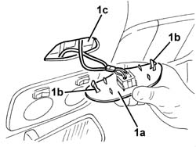
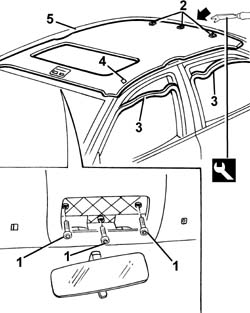
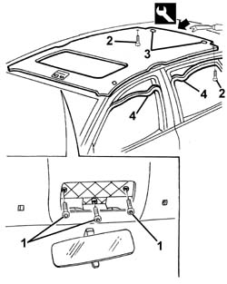
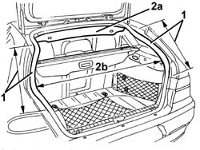

7040H16 roof panel lining - r r
- Path
- Procedures > 70 FITTINGS > 7040 BODYSHELL INTERIOR TRIMS AND FITTINGS > 7040H roof panel lining > 7040H16 roof panel lining - r r
- Kind
- repair procedure (removal / refitting; the operation number is the code)
- Applies to
- all engines; all production periods
- Interactive page
- https://sloeber94.github.io/elrnDB-a156/en/#/3238837
Applies to: all engines; all production periods
Applies to: all engines; all production periods
 Removing
Removing
 Refitting
Refitting7065C68 rear view mirror - r+r
7040E40 modular front courtesy light - r r
7040E16 rear courtesy light - r+r
7065C34 l/h or r/h sun blind (one) - r+r (left and right)
7065C30 interior l/h or r/h grab handle (one) - r+r (all).
7040H30 front pillar trim - r r (left and right)
7040H38 central pillar upper element - r r (left and right)
7050A20 one-piece rear seat cushion - r r
7050B10 l/h or r/h head restraint (one) of rear seat - r+r (left and right)
7040H42 rear pillar trim - r r (left and right)
7030B34 sliding roof compartment decorative seal - r+r
1. Remove the sun roof switch holder trim (1a) by undoing the retainers (1b), then pass it through the slot (1c).

Applies to: all engines; all production periods
Recline the front seat backrests.
1. Undo the bolts for the front courtesy light housing.
2. Remove the retainers using the appropriate tool.
 | Name | Country |
|---|---|---|
3 | Scraper blade | 1.823.015.000 |
3. Remove the seals of the 4 door frames near the ceiling trim.
4. Separate the velcro buffers.
5. Remove the ceiling trim and take it out of the interior compartment through the front right door.

Applies to: all engines; all production periods
Refitting
RemovingCheck that the trim is not damaged.
Position the ceiling trim, placing it in the passenger compartment via the right front door, after having reclined the front seat backrest.
Attach the velcro buffers.
Fit the retainers.
Tighten the bolts for the front courtesy light housing.
Fit the 4 door seals.
7030B34 sliding roof compartment decorative seal - r+r
7040H42 rear pillar trim - r r (left and right)
7050B10 l/h or r/h head restraint (one) of rear seat - r+r (left and right)
7050A20 one-piece rear seat cushion - r r
7040H38 central pillar upper element - r r (left and right)
7040H30 front pillar trim - r r (left and right)
7065C30 interior l/h or r/h grab handle (one) - r+r (all).
7065C34 l/h or r/h sun blind (one) - r+r (left and right)
7040E16 rear courtesy light - r+r
7040E40 modular front courtesy light - r r
7065C68 rear view mirror - r+r
Check that all the parts are fitted correctly and check the operation of removed electrical components.
Applies to: all engines; all production periods; only with equipment: Station Wagon
Removing
RefittingTake the following precaution.
7065C68 rear view mirror - r+r
7040E40 modular front courtesy light - r r
7040E16 rear courtesy light - r+r
7040E20 courtesy light for passenger side sun blind mirror - r r (left and right)
7065C34 l/h or r/h sun blind (one) - r+r (left and right)
7065C30 interior l/h or r/h grab handle (one) - r+r (all)
7040H30 front pillar trim - r r (left and right)
7040H38 central pillar upper element - r r (left and right)
7040B22 luggage compartment/load platform moulding - r+r
7040B15 (One), rear side trim mounting BRACKET left or right - R.R . (left and right)
7040B28 PET transport PROTECTION and load carrying compartment COVER COMBINATION BLIND - R.R.
- 7040L44 rear compartment scuff strip - r r
7050A47 SIDE PANEL (one) for rear seat BACKREST., left or right - R.R . (left and right)
7040B30 l/h or r/h side support (one) for load platform cover blind - arrange (left and right)
7040H42 rear pillar trim - r r (left and right)
7040H12 Roof panel REAR TRIM - R.R.
7040H62 rear window surround trim one lh or rh r r (left and right)
7050B10 l/h or r/h head restraint (one) of rear seat - r+r (left and right)
7030B34 sliding roof compartment decorative seal - r+r
1. Remove the sun roof switch holder trim (1a), releasing the retainers (1b), then pass it through the slot (1c).
Applies to: all engines; all production periods; only with equipment: Station Wagon
Recline the front seat backrests.
1. Undo the bolts for the front courtesy light housing.
2. Undo the rear bolts.
3. Remove the retaining buttons using the special tool.
| Name | Country |
|---|---|---|
3 | Scraper blade | 1.823.015.000 |
4. Prise out the seals of the 4 door frames near the ceiling trim.

Applies to: all engines; all production periods; only with equipment: Station Wagon
1. Prise out the tailgate seal from the sides to the tail-lights.
2. Take the ceiling trim (2a) out of the passenger compartment by removing through the widest part (2b) of the tail-gate opening.

Applies to: all engines; all production periods; only with equipment: Station Wagon
Refitting
RemovingCheck that the ceiling trim is undamaged.
Recline the front seat backrests.
Fit the ceiling trim, inserting it into the interior compartment through the tailgate housing.
Do up the retaining studs.
Tighten the rear bolts.
Tighten the bolts for the front courtesy light housing.
Fit the tailgate housing seal.
Fit the 4 door seals.
Position the sliding roof switch panel and fit in place.
7030B34 sliding roof compartment decorative seal - r+r
7050B10 l/h or r/h head restraint (one) of rear seat - r+r (left and right)
7040H62 rear window surround trim one lh or rh r r (left and right)
7040H12 Roof panel REAR TRIM - R.R.
7040H42 rear pillar trim - r r (left and right)
7040B30 l/h or r/h side support (one) for load platform cover blind - arrange (left and right)
7050A47 SIDE PANEL (one) for rear seat BACKREST., left or right - R.R . (left and right)
- 7040L44 rear compartment scuff strip - r r
7040B28 PET transport PROTECTION and load carrying compartment COVER COMBINATION BLIND - R.R.
7040B15 (One), rear side trim mounting BRACKET left or right - R.R . (left and right)
7040B22 luggage compartment/load platform moulding - r+r
7040H38 central pillar upper element - r r (left and right)
7040H30 front pillar trim - r r (left and right)
7065C30 interior l/h or r/h grab handle (one) - r+r (all)
7065C34 l/h or r/h sun blind (one) - r+r (left and right)
- 7040E21 courtesy light for sun visor mirror (1), lh or rh - r r (left and right)
7040E16 rear courtesy light - r+r
7040E40 modular front courtesy light - r r
7065C68 rear view mirror - r+r
Check that all the parts are fitted correctly and check the operation of removed electrical components.
Topics linked from this page (20)
- 7030B34 sliding roof compartment decorative seal - r+r
- 7040B15 (One), rear side trim mounting BRACKET left or right - R.R .
- 7040B22 luggage compartment/load platform moulding - r+r
- 7040B28 PET transport PROTECTION and load carrying compartment COVER COMBINATION BLIND - R.R.
- 7040B30 l/h or r/h side support (one) for load platform cover blind - arrange
- 7040E16 rear courtesy light - r+r
- 7040E20 courtesy light for passenger side sun blind mirror - r r
- 7040E40 modular front courtesy light - r r
- 7040H12 Roof panel REAR TRIM - R.R.
- 7040H30 front pillar trim - r r
- 7040H38 central pillar upper element - r r
- 7040H42 rear pillar trim - r r
- 7040H62 rear window surround trim one lh or rh r r
- 7050A19 rear seat squab - r r
- 7050A20 one-piece rear seat cushion - r r
- 7050A47 SIDE PANEL (one) for rear seat BACKREST., left or right - R.R .
- 7050B10 l/h or r/h head restraint (one) of rear seat - r+r
- 7065C30 interior l/h or r/h grab handle (one) - r+r
- 7065C34 l/h or r/h sun blind (one) - r+r
- 7065C68 rear view mirror - r+r